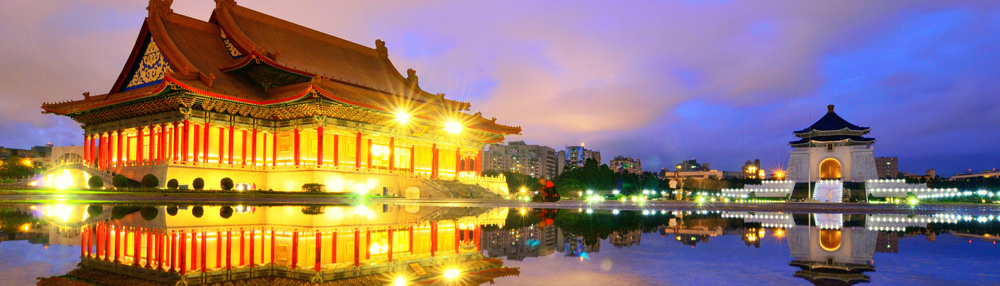
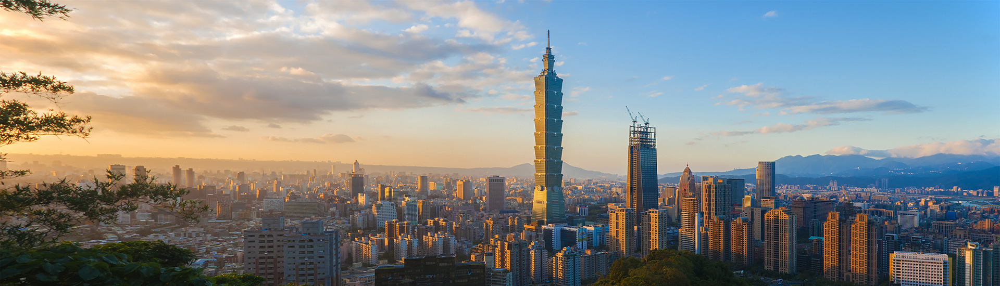
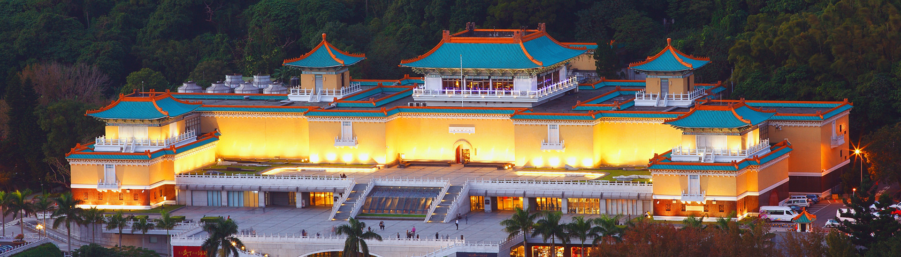
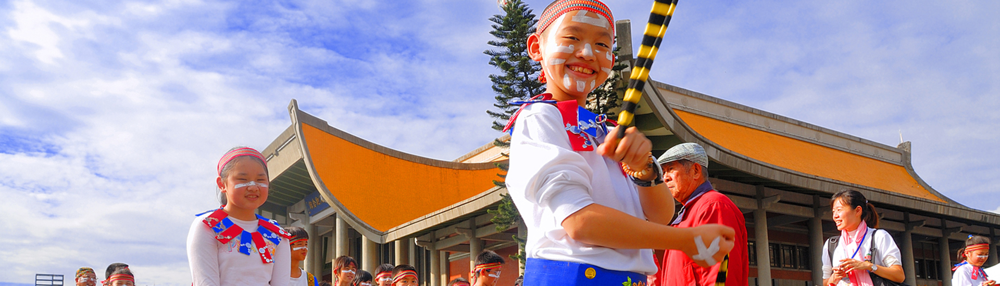

<!DOCTYPE hyml> 

<h1> Taipei</h1>

<i>The heart of Taiwan</i>
<table> 

<html>

</tr>
<p>
<head>
	<link href="style2.css" rel="stylesheet">
<link href="https://fonts.googleapis.com/css?family=Gloria+Hallelujah|Permanent+Marker" rel="stylesheet">

   </P>

<h2>Introduction</h2>
<p>
 Taipei City is the most modern and the largest city in Taiwan. In Taipei,
 there are approximately 3 million people,and half of them are from the southern or central part of Taiwan who work and live in the city.
From the 2nd world's tallest building (Taipei 101) to the biggest collection of Chinese art, 
Taipei invites you into a world of fascinating contrasts - a mix of the modern and traditional, with a generous dash of energy and friendly smiles from all the local people.</p>
	<p><h2>video</h2></p>
Below is a really cool video from a tourist who spend a day in Taipei. 
<p>
<nav>
<li><A href="https://www.youtube.com/watch?v=EeO9pUYXhNs"> A day in Taipei </p></nav></li></A>

